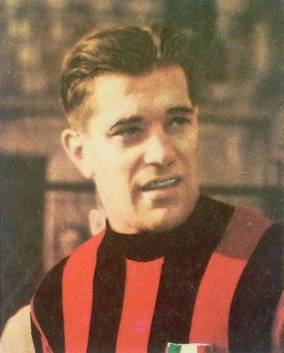
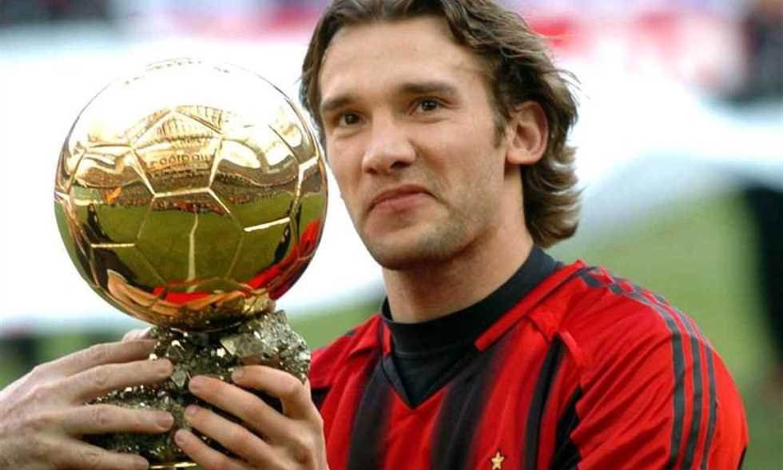
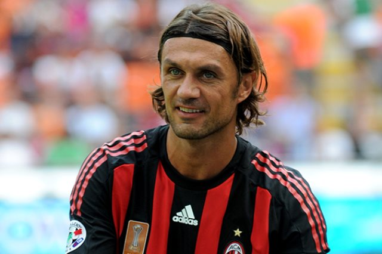
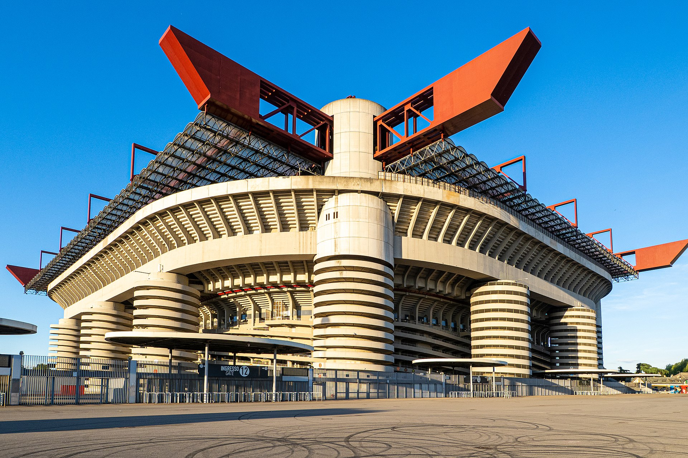

Associazione Calcio Milan (Italian pronunciation: [assotʃatˈtsjoːne ˈkaltʃo ˈmiːlan]), commonly referred to as AC Milan (Italian pronunciation: [a ˈtʃi ˈmiːlan]) or simply Milan (Italian pronunciation: [miːlan]),[6] is a professional football club in Milan, Italy, founded in 1899.[7][8] The club has spent its entire history, with the exception of the 1980–81 and 1982–83 seasons, in the top flight of Italian football, known as Serie A since 1929–30.[7]
| Players | club playing period | Goals | Matches |
|---|---|---|---|
|

Gunnar Nordahl |
1948-1955 | 221 | 268 |
|

Andriy Shevchenko |
1999-2009 | 175 | 322 |
|

Paolo Maldini |
1984-2008 | 80 | 902 |
AC Milan was founded as Milan Foot-Ball and Cricket Club in 1899 by English expatriate Herbert Kilpin.[8] The club claims 16 December of that year as their foundation date,[21] but historical evidence seems to suggest that the club was actually founded a few days earlier, most likely on 13 December.[2] However, with the club's charter being lost, the exact date remains open to debate. for more click here.
San Siro View of the San Siro in 1934 Curva Sud of the San Siro Milan played their first matches at the Trotter pitch, located where the Milan Central railway station would later be built. It could not be defined as a stadium, as there were no dressing rooms, no stands and no other facilities. In 1903, Milan moved to the Acquabella pitch, where the stands consisted of a section of ground raised for the purpose. Milan played there until 1905. The following year the club moved to the Porta Monforte pitch, where they played until 1914. The stadium was furnished with a ticket office and wooden stands. In the following years Milan played at the Velodromo Sempione from 1914 to 1920, and at the Viale Lombardia stadium from 1920 to 1926. The latter was a modern structure, with a big main stand and which hosted several games of the Italy national football team.[81]
